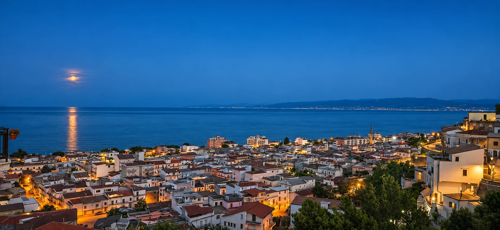
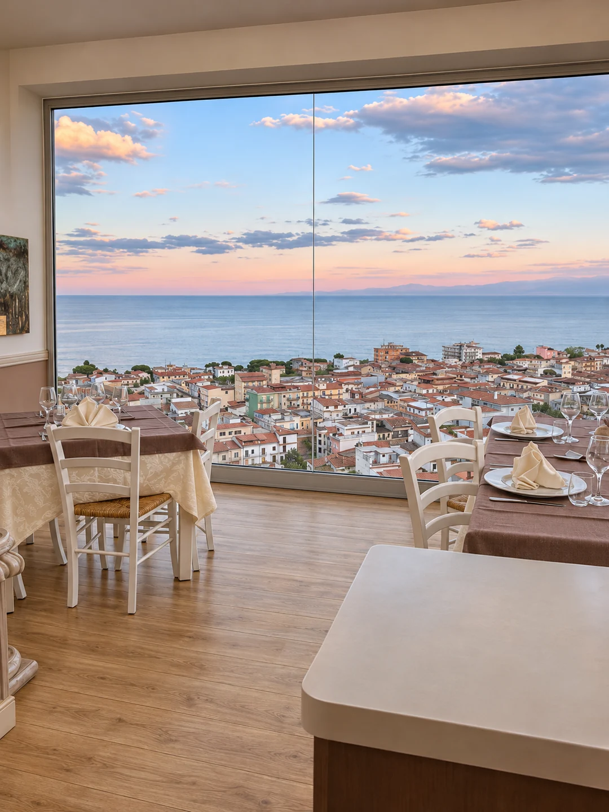

Trebisacce / Sul mare Ionio
Lasciati ispirare01 Il ristorante
Un tavolo
con vista.
Uno sguardo su Trebisacce, l’orizzonte dello Ionio e il tempo di godersi ogni assaggio. Da Alice, il panorama accompagna i tuoi momenti a tavola.
Scopri la nostra cucina
02 La cucina
Un assaggio del
nostro menù
Colori, profumi e voglia
di un altro assaggio.
03 Ti aspettiamo
Ci vediamo
da Alice.
Il prossimo momento speciale
comincia da un tavolo.